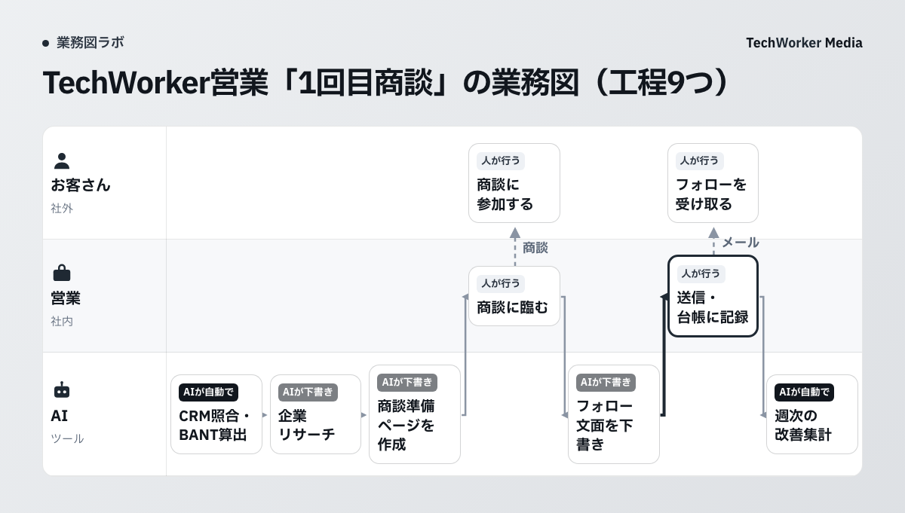
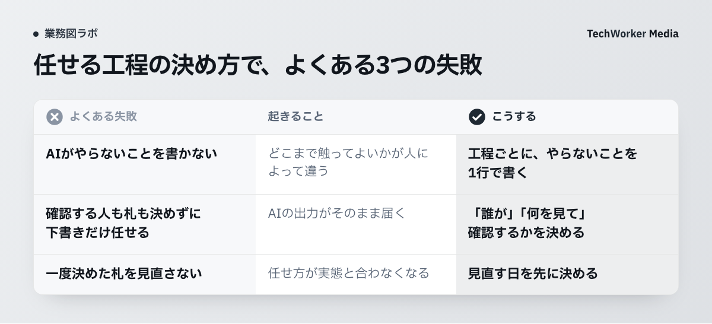

AIに任せる業務は、どうやって決めればよいですか？
業務図の工程ごとに3つの札を付け、あわせてAIがやらないことも書き出して、任せる範囲を決めます。
任せる範囲は、工程ごとに段階をつけて決めます。業務全体に1つの答えを出す必要はありません。
工程とは、業務を作業の単位に分けたひとつひとつのことです。誰が、どの順番で、何を使って進めるかを、工程でつないで1枚に描いたものが、業務図です。
各工程に付ける札は、次の3つです。
- AIが自動で。AIが実行まで進めます。人は結果を後から見ます。
- AIが下書き・人が確認。AIが下書きまで作ります。人が見て、直して、決めます。
- 人が行う。人が実行します。AIは使わないか、材料を集めるところまでです。
札と一緒に、工程ごとに「AIがやらないこと」も書きます。たとえば「顧客管理の登録内容は書き換えない」のように、AIの手が届く範囲を言葉にします。
この考え方は、公的な資料にも見られます。総務省と経済産業省の「AI事業者ガイドライン」（第1.2版）は、公平性の項目で人間の判断の介在を挙げています。AIが単独で判断する使い方に加えて、適切なタイミングで人間の判断を入れる使い方を検討するとされています。
AIエージェント（AIが自分で作業を進めるツール）の設計でも、同じ考え方が使われています。Anthropicは、コーディングエージェントのClaude Codeの既定を、次のように説明しています。読み取りは、確認なしで行います。コードやシステムを変える操作の前には、人の承認を求めます。
Claude Codeの公式ドキュメントにも、同じ趣旨の説明があります。手動モードでは、ファイルの編集やコマンドの実行の前に、確認が入ります。ネットワークへのアクセスの前も同様です。出典は、末尾にまとめました。
札を業務図に残すと、「どこまで任せたか」が工程の隣に記録されます。後から見直すときの手がかりになります。
TechWorkerの営業は、「1回目商談」の工程をどう分けましたか？
9つの工程は、AIが自動で2つ、AIが下書き3つ、人が行う4つに分かれました。お客さんの2工程を含みます。
ここからは、TechWorkerの営業の業務図を例にします。営業の「新規のお客さんとの商談」は、4つのワークフローに分けています。1回目商談、2回目商談、3回目商談、契約です。次の図は、そのうち「1回目商談」です。
この図は、CompanyMap AIの画面で作成した業務図をもとにしています。CompanyMap AIは、AIの聞き取りで部署の業務フローを業務図にするサービスです。
図の見方です。横の帯は担当で、お客さん、営業、AIの3つがあります。左から右へ、仕事が進みます。各工程の上の札が、任せ方を表します。

準備の段階では、AIが3つの工程を進めます。
工程1「CRM照合・BANT算出」は、AIが自動で行います。CRM（顧客情報を管理するシステム）から会社を照合します。BANT（予算、決裁者、必要性、導入時期の4点で見込みを測る枠組み）のスコアも出します。この工程のAIがやらないことは、「CRMの登録内容は書き換えない」です。
工程2「企業リサーチ」と工程3「商談準備ページを作成」は、AIが下書きです。使うシステムは、Web検索とNotionです。
商談の日は、人が行います。営業が商談に臨み、お客さんが参加します。
フォローの段階では、工程6「フォロー文面を下書き」をAIが担当します。工程7「送信・台帳に記録」は、人が行います。使うシステムは、Gmailと営業台帳です。お客さんに届く送信は、人の工程に置いています。
改善の段階では、工程9「週次の改善集計」をAIが自動で行います。毎週月曜の9時30分に動きます。使うシステムはSlackです。
工程1、2、6には、「AIがやらないこと」の件数が札の下に出ます。工程1と工程2は1件、工程6は2件です。
この図から読み取れることは、3つあります。
- AIが自動で行う2工程は、照合と集計です。
- お客さんに届くフォローは、AIが文面を下書きし、人が送信します。
- 下書きの工程にも、AIがやらないことを置いています。
任せる工程は、どんな手順で決めればよいですか？
工程に分ける、影響を見る、札を付ける、やらないことを書く、見直す日を決める、の5つの手順で進めます。
- 業務を工程に分け、動詞で終わる名前を付けます。「見積を送る」のように書きます。CompanyMap AIの画面にも、工程名は動詞で終えるよう案内が出ます。担当ごとに並べると、受け渡しが見えます。担当は、お客さん、営業、AIといった単位で分けます。
- 工程ごとに、間違えたときの影響を見ます。見る点は3つです。お客さんに届くか。元に戻せるか。判断の基準を文章で書き切れるか。たとえば社内の集計は、間違えても直せます。お客さんへの送信や台帳の書き換えは、元に戻しにくい工程です。
- 札を付けます。次の図のとおり、質問は2つです。手順と判断の基準を書き切れない工程は、「人が行う」にします。書き切れても、間違いがお客さんに届く、または元に戻せない工程は、「AIが下書き・人が確認」にします。どちらにも当てはまらない工程が、「AIが自動で」の候補です。

- AIがやらないことを、工程ごとに書きます。「対象は操作しない」の形で1行にします。TechWorkerの図では、工程1に「CRMの登録内容は書き換えない」と書きました。AIの手が届く範囲を、工程の隣で見えるようにします。
- 使うシステムと、見直す日を決めます。工程ごとに使うシステムを書くと、AIに渡す権限の範囲が見えます。TechWorkerの図には、「商談ごと・週次で改善」と書いています。週次の改善集計が、札を見直す機会にもなります。
手順3の札は、AIの判断が重い工程ほど慎重に付けます。Microsoftは、Copilot Studioの承認機能（プレビュー段階）を説明しています。AIが判断した後に、人の確認の段階を置けるとされています。
同じ説明で、金銭の取引、法務の判断、人事、コンプライアンス上重要な手続きは、人の承認の段階を必ず通すよう注意しています。自社の業務で、これに近い工程は、人が行う札から始めます。
人が確認する工程には、もう1つ注意があります。AI事業者ガイドラインは、自動化バイアスに注意を払うよう求めています。自動化バイアスとは、自動化されたシステムを過度に信頼し、頼ってしまう現象です。
同じガイドラインの脚注には、ある提案が紹介されています。AIの判断を人が承認するときは、理由や根拠を自分で考えてから承認する、というものです。確認の札を付けた工程には、確認する人と見る点も書き添えます。
うまくいかない例には、どんなものがありますか？
よくある失敗は、AIがやらないことを書かない、確認者を決めない、札を見直さない、の3つです。

- AIがやらないことを書かない。札だけを付けると、「どこまで触ってよいか」が人によって変わります。工程1のように、やらないことを1行で書きます。
- 確認する人も札も決めずに、下書きだけ任せる。AIの出力が、そのままお客さんに届きます。「誰が」「何を見て」確認するかを、工程ごとに決めます。確認が形だけの承認にならないよう、自動化バイアスにも注意します。
- 一度決めた札を見直さない。業務は変わります。任せ方が実態と合わなくなるので、見直す日を先に決めます。
3つとも、図を描いた後の運用で起きる失敗です。札と、やらないことと、見直す日をセットで残すと、防げます。
よくある質問
必要ありません。最初は迷う工程を「人が行う」か「AIが下書き・人が確認」にしておきます。実際に動かして、間違いが少ないと分かった工程から、札を軽くします。札と、やらないことを書き換えるだけで、任せ方を変えられます。
間違えても直せて、お客さんに届かず、判断の基準を文章で書き切れる工程です。TechWorkerの営業の図では、CRMの照合とBANT算出、週次の改善集計がこの札です。自動の工程にも、「CRMの登録内容は書き換えない」のようにやらないことを置きます。
AIが何を根拠にしたかと、やらないことの範囲を守っているかを見ます。AI事業者ガイドライン（第1.2版）の脚注には、ある提案が紹介されています。AIの判断を人が承認するときは、承認する理由や根拠を人自身が考えてから承認する、というものです。確認する人と見る点は、工程ごとに決めておきます。
工程を一番知っているのは現場の担当者です。ただ、1人で描くと抜けや思い込みが残ります。CompanyMap AIは、AIの聞き取りで部署の業務フローを業務図にするサービスです。聞き取りの答えをもとに、工程と担当を1枚にまとめます。
次の一歩は何から始めればよいですか？
まず1つの部署の、1つの業務フローを選び、工程を書き出して札を付けるところから始めます。
- 部署と業務フローを1つ選び、工程を動詞で書き出します。
- 工程ごとに、間違えたときの影響を見て、3つの札を付けます。
- AIがやらないこと、確認する人、見直す日を、工程の隣に書きます。
業務図を一から描く時間が取れない場合は、CompanyMap AIが使えます。AIの聞き取りで、部署の業務フローを業務図にします。まずはCompanyMap AIの説明をご覧ください。
この記事は、どの資料をもとに書いていますか？
国のガイドラインと、AnthropicとMicrosoftの公式資料が根拠です。確認日は2026年10月2日です。
- 総務省・経済産業省「AI事業者ガイドライン（第1.2版）」令和8年3月31日。https://www.meti.go.jp/shingikai/mono_info_service/ai_shakai_jisso/pdf/20260331_1.pdf（2026年10月2日確認。公平性の項目「人間の判断の介在」、人間中心の項目の自動化バイアスとその脚注）
- Anthropic「Our framework for developing safe and trustworthy agents」2025年8月4日公開。https://www.anthropic.com/news/our-framework-for-developing-safe-and-trustworthy-agents（2026年10月2日確認）
- Claude Code Docs「Choose a permission mode」。https://code.claude.com/docs/en/permission-modes（2026年10月2日確認）
- Microsoft Learn「Multistage and AI approvals in agent flows」（Copilot Studio、プレビュー段階の機能）。https://learn.microsoft.com/en-us/microsoft-copilot-studio/flows-advanced-approvals（2026年10月2日確認）
- TechWorker営業の業務図：CompanyMap AIの画面（第3版・AIを入れた後）。